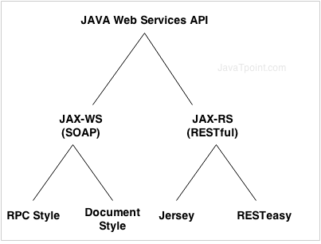

The term Web services describes a standardized way of integrating Web-based applications using the XML, SOAP, WSDL and UDDI open standards over an Internet protocol backbone.
XML is used to tag the data, SOAP is used to transfer the data, WSDL is used for describing the services available and UDDI is used for listing what services are available.
These applications can be local, distributed, or web-based. Web services are built on top of open standards such as TCP/IP, HTTP, Java, HTML, and XML.
Software applications written in various programming languages and running on various platforms can use
web services to exchange data over computer networks like the Internet.
This interoperability (e.g.,
between Java and Python, or Windows and Linux applications) is due to the use of open standards.
There are three major web service components
XML bases protocol for accessing web services
platform independent and language independent
WSDL is a xml document containing information about web services such as method name, method parameter and how to access it
WSDL is a part of UDDI. It acts as a interface between web service applications
UDDI is a directory of web service interfaces described by WSDL, containing information about web services.
SOAP defines a standard communication protocol (set of rules) specification for XML-based message exchange. SOAP uses different transport protocols, such as HTTP and SMTP.
The Standard protocol HTTP makes it easier for SOAP model to tunnel across firewalls and proxies without any modifications to the SOAP protocol.
WS Security: SOAP defines its own security known as WS Security.
Language and Platform independent: SOAP web services can be written in any programming language and executed in any platform.
Slow: SOAP uses XML format that must be parsed to be read. It defines many standards that must be followed while developing the SOAP applications. So it is slow and consumes more bandwidth and resource.
WSDL dependent: SOAP uses WSDL and doesn't have any other mechanism to discover the service.
REST is an architectural style not a protocol.
REST describes a set of architectural principles by which data can be transmitted over a standardized interface (such as HTTP).
Fast: RESTful Web Services are fast because there is no strict specification like SOAP. It consumes less bandwidth and resource.
Language and Platform independent: RESTful web services can be written in any programming language and executed in any platform.
Can use SOAP: RESTful web services can use SOAP web services as the implementation.
Permits different data format: RESTful web service permits different data format such as Plain Text, HTML, XML and JSON.
A client can access the resource using the unique URI and a representation of the resource is returned. With each new resource representation, the client is said to transfer state. While accessing RESTful resources with HTTP protocol, the URL of the resource serves as the resource identifier and GET, PUT, DELETE, POST and HEAD are the standard HTTP operations to be performed on that resource.
There are many differences between SOAP and REST web services. The important 10 differences between SOAP and REST are given below:
| No. | SOAP | REST |
|---|---|---|
| 1) | SOAP is a protocol. | REST is an architectural style. |
| 2) | SOAP stands for Simple Object Access Protocol. | REST stands for REpresentational State Transfer. |
| 3) | SOAP can't use REST because it is a protocol. | REST can use SOAP web services because it is a concept and can use any protocol like HTTP, SOAP. |
| 4) | SOAP uses services interfaces to expose the business logic. | REST uses URI to expose business logic. |
| 5) | JAX-WS is the java API for SOAP web services. | JAX-RS is the java API for RESTful web services. |
| 6) | SOAP defines standards to be strictly followed. | REST does not define too much standards like SOAP. |
| 7) | SOAP requires more bandwidth and resource than REST. | REST requires less bandwidth and resource than SOAP. |
| 8) | SOAP defines its own security. | RESTful web services inherits security measures from the underlying transport. |
| 9) | SOAP permits XML data format only. | REST permits different data format such as Plain text, HTML, XML, JSON etc. |
| 10) | SOAP is less preferred than REST. | REST more preferred than SOAP. |
Service Oriented Architecture or SOA is a design pattern. It is designed to provide services to other applications through protocol. It is a concept only and not tied to any programming language or platform.
Web services is a technology of SOA most likely.
A service is well-defined, self-contained function that represents unit of functionality. A service can exchange information from another service. It is not dependent on the state of another service.
The figure given below illustrates the service oriented architecture. Service consumer sends service request to the service provider and service provider sends the service response to the service consumer. The service connection is understandable to both service consumer and service provider.
The java web service application can be accessed by other programming languages such as .Net and PHP.
Java web service application perform communication through WSDL (Web Services Description Language). There are two ways to write java web service application code: SOAP and RESTful.
There are two main API's defined by Java for developing web service applications since JavaEE 6.
1) JAX-WS: for SOAP web services. The are two ways to write JAX-WS application code: by RPC style and Document style.
2) JAX-RS: for RESTful web services. There are mainly 2 implementation currently in use for creating JAX-RS application: Jersey and RESTeasy.
GET
GET method is used to retreive data from a server at the specified resource
POST
POST requests are used to send data to the API sever to create or udpate a resource. The data sent to the server is stored in the request body of the HTTP request.
PUT
Simlar to POST, PUT requests are used to send data to the API to create or update a resource. The difference is that PUT requests are idempotent. That is, calling the same PUT request multiple times will always produce the same result. In contrast, calling a POST request repeatedly make have side effects of creating the same resource multiple times.
HEAD
The HEAD method is almost identical to GET, except without the response body. In other words, if GET /users returns a list of users, then HEAD /users will make the same request but won't get back the list of users. HEAD requests are useful for checking what a GET request will return before actually making a GET request -- like before downloading a large file or response body. Learn more about HEAD requests on MDN. It's worth pointing out that not every endpoint that supports GET will support HEAD - it completely depends on the API you're testing.
DELETE
The DELETE method is exactly as it sounds: delete the resource at the specified URL. This method is one of the more common in RESTful APIs so it's good to know how it works. If a new user is created with a POST request to /users, and it can be retrieved with a GET request to /users/{{userid}}, then making a DELETE request to /users/{{userid}} will completely remove that user.
PATCH
A PATCH request is one of the lesser-known HTTP methods, but I'm including it this high in the list since it is similar to POST and PUT. The difference with PATCH is that you only apply partial modifications to the resource. The difference between PATCH and PUT, is that a PATCH request is non-idempotent (like a POST request). To expand on partial modification, say you're API has a /users/{{userid}} endpoint, and a user has a username. With a PATCH request, you may only need to send the updated username in the request body - as opposed to POST and PUT which require the full user entity.
OPTIONS
Last but not least we have OPTIONS requests. OPTIONS requests are one of my favorites, though not as widely used as the other HTTP methods. In a nutshell, an OPTIONS request should return data describing what other methods and operations the server supports at the given URL. OPTIONS requests are more loosely defined and used than the others, making them a good candidate to test for fatal API errors. If an API isn't expecting an OPTIONS request, it's good to put a test case in place that verifies failing behavior.
| HTTP Method | GET |
|---|---|
| URI | http://localhost:8080/UserManagement/rest/UserService/users |
| Operation | Get list of users |
| Operation Type | Read Only |
| HTTP Method | GET |
|---|---|
| URI | http://localhost:8080/UserManagement/rest/UserService/users/1 |
| Operation | Get user of Id 1 |
| Operation Type | Read Only |
| HTTP Method | POST |
|---|---|
| URI | http://localhost:8080/UserManagement/rest/UserService/users/2 |
| Operation | Insert user with Id 2 |
| Operation Type | Non-Idempotent |
| HTTP Method | PUT |
|---|---|
| URI | http://localhost:8080/UserManagement/rest/UserService/users/2 |
| Operation | Update User with Id 2 |
| Operation Type | N/A |
| HTTP Method | DELETE |
|---|---|
| URI | http://localhost:8080/UserManagement/rest/UserService/users/1 |
| Operation | Delete User with Id 1 |
| Operation Type | Idempotent |
| HTTP Method | OPTIONS |
|---|---|
| URI | http://localhost:8080/UserManagement/rest/UserService/users |
| Operation | List the supported operations in web service |
| Operation Type | Read Only |
| HTTP Method | HEAD |
|---|---|
| URI | http://localhost:8080/UserManagement/rest/UserService/users |
| Operation | Returns only HTTP Header, no Body |
| Operation Type | Read Only |
Here are important points to be considered:
GET operations are read only and are safe.
PUT and DELETE operations are idempotent means their result will always same no matter how many times these operations are invoked.
PUT and POST operation are nearly same with the difference lying only in the result where PUT operation is idempotent and POST operation can cause different result.